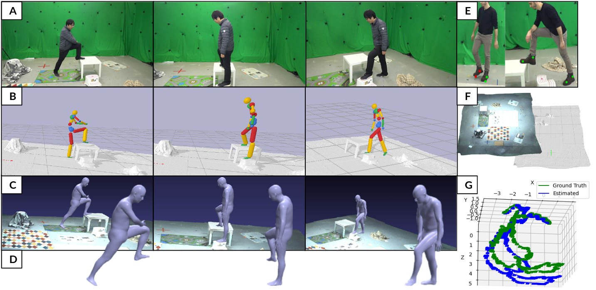

Scene geometry
Reconstructed non-flat environment
The scene mesh used for contact-aware evaluation and physics optimization.
PhysDynPose estimates physically plausible 3D human motion in world coordinates when the camera moves and the ground is not flat.

We introduce a non-synthetic dataset containing ground-truth camera trajectories of a dynamically moving RGB camera, scene geometry, and 3D human motion with human-scene contact labels. Then we combine monocular pose estimation, moving-camera SLAM, scene geometry, and physics optimization to recover human motion on real, non-planar terrain.
Real synchronized captures with moving RGB cameras, ground-truth human motion, camera trajectories, scene geometry, and contact labels.
The scene mesh used for contact-aware evaluation and physics optimization.
Ground-truth SMPL motion and the camera trajectory in the reconstructed scene.
The synchronized viewpoint used by monocular motion estimators.
SMPL ground truth, environment geometry, and dynamic camera path.
The corresponding moving-camera perspective through the scene.
PhysDynPose results paired with their corresponding moving-camera observations.
Most monocular and physics-based human pose tracking methods, while achieving state-of-the-art results, suffer from artifacts when the scene does not have a strictly flat ground plane or when the camera is moving. Moreover, these methods are often evaluated on in-the-wild real world videos without ground-truth data or on synthetic datasets, which fail to model the real world light transport, camera motion, and pose-induced appearance and geometry changes. To tackle these two problems, we introduce MoviCam, the first non-synthetic dataset containing ground-truth camera trajectories of a dynamically moving monocular RGB camera, scene geometry, and 3D human motion with human-scene contact labels. Additionally, we propose PhysDynPose, a physics-based method that incorporates scene geometry and physical constraints for more accurate human motion tracking in case of camera motion and non-flat scenes. More precisely, we use a state-of-the-art kinematics estimator to obtain the human pose and a robust SLAM method to capture the dynamic camera trajectory, enabling the recovery of the human pose in the world frame. We then refine the kinematic pose estimate using our scene-aware physics optimizer. From our new benchmark, we found that even state-of-the-art methods struggle with this inherently challenging setting, i.e. a moving camera and non-planar environments, while our method robustly estimates both human and camera poses in world coordinates.
@inproceedings{aytekin2025physics,
title={Physics-based human pose estimation from a single moving RGB camera},
author={Aytekin, Ayce Idil and Li, Chuqiao and Luvizon, Diogo and Dabral, Rishabh and Oswald, Martin and Habermann, Marc and Theobalt, Christian},
booktitle={Proceedings of the Computer Vision and Pattern Recognition Conference},
pages={3891--3900},
year={2025}
}